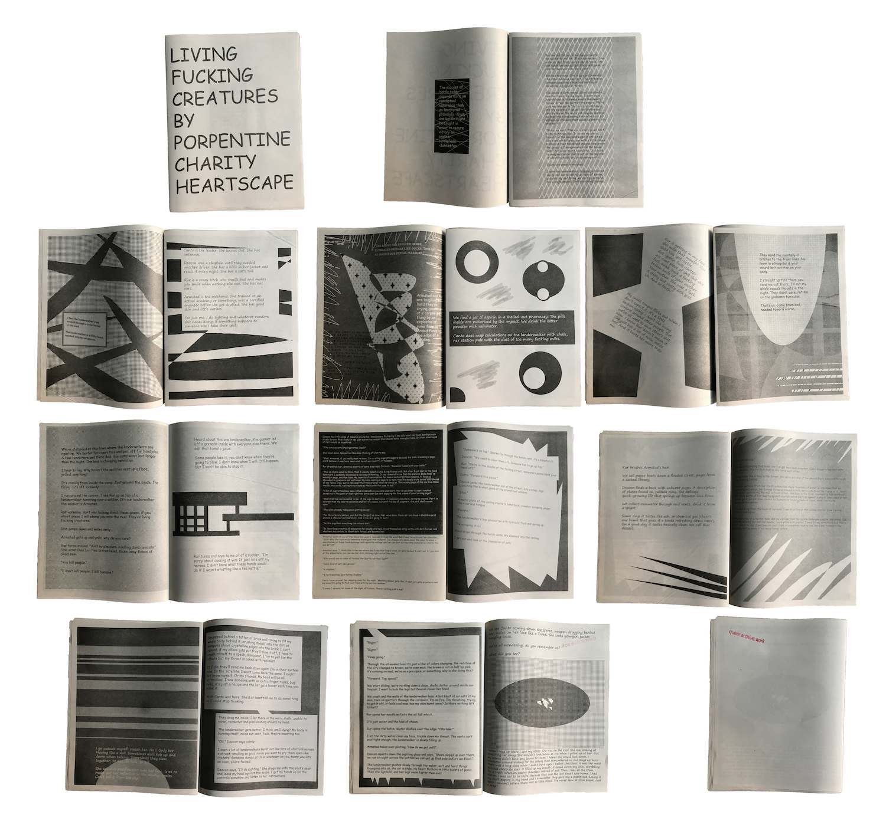
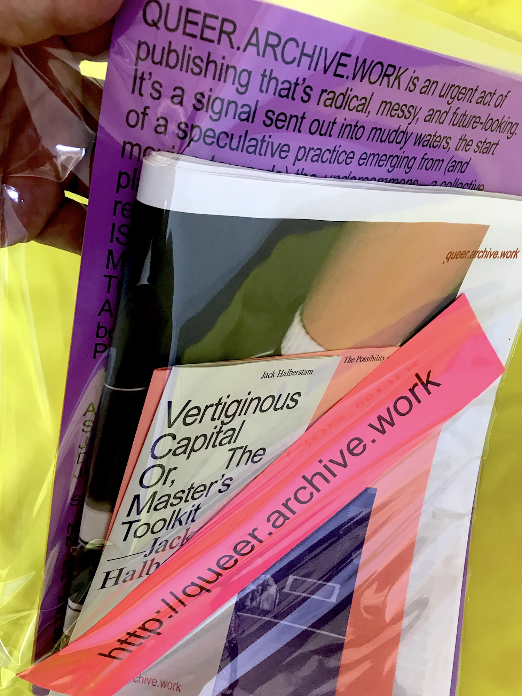
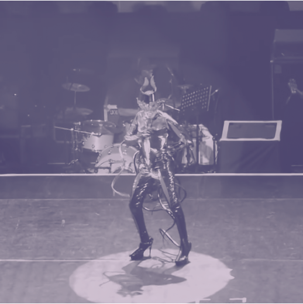

QUEER.ARCHIVE.WORK is an urgent act of publishing that’s radical, messy, and future-looking. It’s a signal sent out into muddy waters, the start of a speculative practice emerging from (and moving towards) the undercommons—a collective place for subversive artists and writers who reject normative narratives. THIS PUBLICATION IS A LOOSE ASSEMBLING OF QUEER METHODOLOGIES, WITH A PARTICULAR VIEW TOWARDS NETWORK CULTURE, FAILURE, AND REFUTATION. It’s an attempt to move far beyond the printed web. IT’S AN EXPERIMENT IN PUBLISHING AS PRACTICE AS RESISTANCE. Edited by Paul Soulellis in Pawtucket, RI.


Contents—
American Artist—A nETwoRK ___of SLAVES~~~***
Somnath Bhatt—..... a thick opening
Jeffrey Cheung and Gabriel Ramirez (Unity Press)
Demian DinéYazhi´—AN INFECTED SUNSET
Jack Halberstam—Vertiginous Capital Or, The Master’s Toolkit
shawné michaelain holloway—_.DEVICEPLAY(trust and touch, care and reflection, [a study of denial])
Nora Khan—The Possibility of a Field
nicole killian—A SCENE AT THE SEA BUS STOP SONG
Be Oakley (GenderFail)
Porpentine Charity Heartscape—Living Fucking Creatures
Nate Pyper—in this house we self-immolate
Sal Randolph—Sappho’s Text

Print edition of 300 launched at 2018 NY Art Book Fair and 2018 Boston Art Book Fair. p2p at dat://queer.hashbase.io


